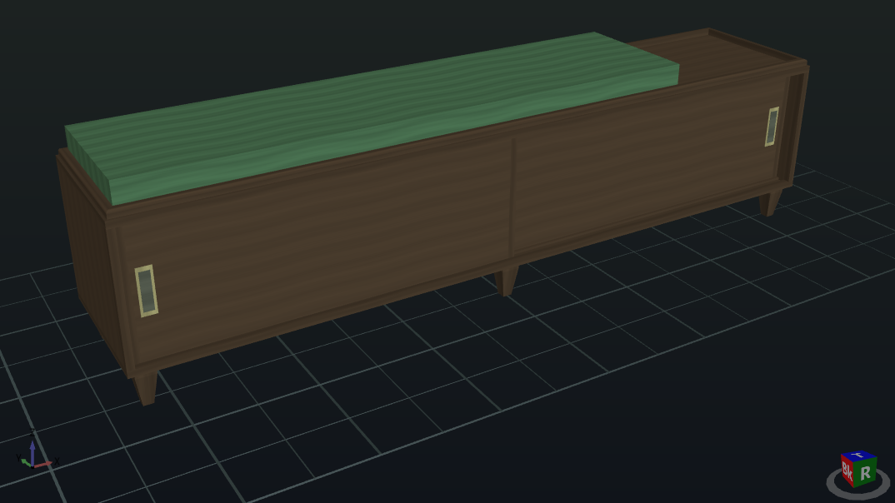

Every design here is an ordinary .swdt file: download it, open it with File → Open, and change whatever you like. They are shared under CC BY 4.0, so you may use and adapt them with credit to the maker. To add your own, see sharing a design below.

Hi-Fi Record Storage Bench
A long, low walnut-plywood cabinet with two sliding doors, five dividers for LP storage, a cushioned seat and six tapered solid-walnut feet. About 80" wide and knee height; the turntable sits on the open end.
Shows: a plywood carcass with a back in grooves, solid banding on every visible edge, dividers in dados driven by parameters, sliding doors in top and bottom grooves of different depths, tapered feet, mitred banding corners.
Sharing a design
Open a Share a design issue and attach your .swdt and a screenshot. Attach only the design file itself, not the .chat.json, .log.json or .view.json files SawDust keeps beside it, and check the project name and notes for anything private first. The full guidelines are in the gallery README.
A template (a design plus its template.json) is installed by copying its folder into %LOCALAPPDATA%\SawDust\templates\; it then appears under Edit → Insert Template….